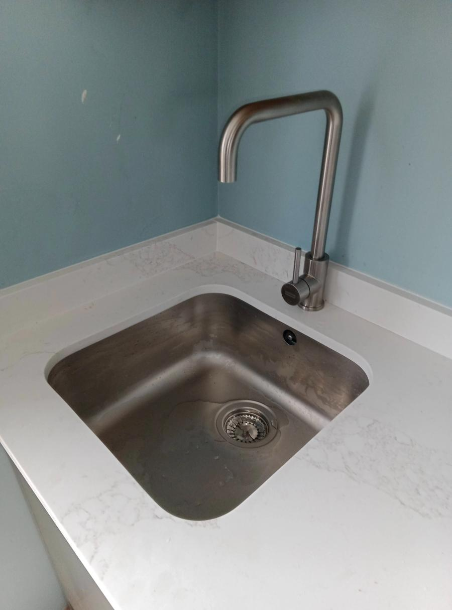

Local plumbing coverage
Your local plumber in Dreyersdal
Bulldog Plumbing is based in Dreyersdal, Cape Town. Local homeowners and businesses can call for weekday repairs, planned plumbing work and emergency assistance outside regular hours by arrangement.

Local service
Plumbing help near you
Having a plumber based nearby makes it easier to explain local access, property type and the urgency of a fault. Tell us what you can see, whether the water has been isolated and which part of the property is affected.
We help with burst and leaking pipes, geyser-related plumbing, blocked drains, hidden leaks, sewer problems, bathroom plumbing and commercial work. Free quotes are available.
Services available
- Emergency plumbing
- Geyser repairs
- Blocked drains
- Leak detection
- Burst pipe repairs
- Sewer & drain repairs
- Commercial plumbing
- Bathroom plumbing
Areas commonly served
Dreyersdal, Bergvliet, Tokai, Diep River, Retreat, Steenberg. Service is arranged by address, so please confirm availability when booking.
Straight answers
Frequently asked questions
Where is Bulldog Plumbing based?
Bulldog Plumbing is based at 7 Winchester Close, Dreyersdal, Cape Town, 7945. Call before visiting so the team can confirm availability.
Do you offer emergency plumbing in Dreyersdal?
Yes. Emergency after-hours and weekend call-outs are available by arrangement. Call with the problem and address so availability can be confirmed.
What services can I book locally?
Services include leak and pipe repairs, geyser-related plumbing, blocked drains, sewer work, bathroom plumbing and commercial plumbing.
Let’s sort it out
Looking for a plumber in Dreyersdal?
Tell us what is happening and where you are. Photos are welcome if the area is safe.